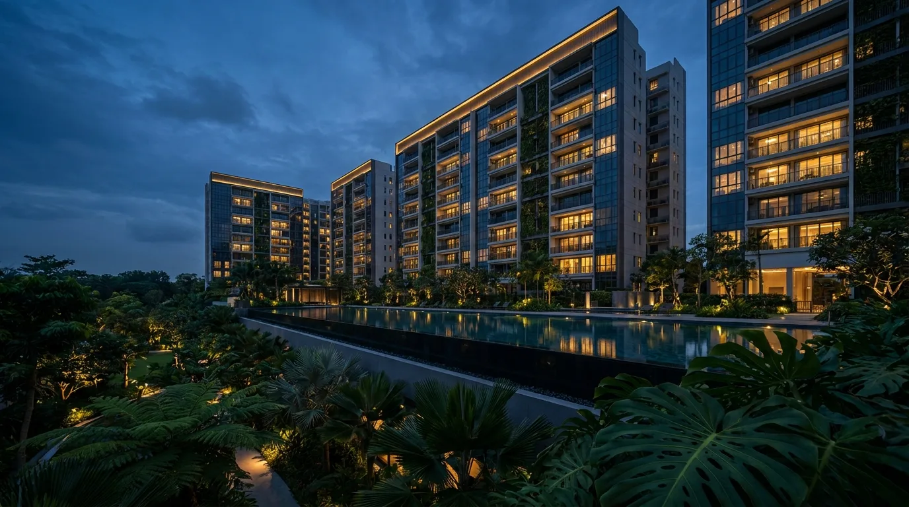

Foreigner & PR Buying Private Property in Singapore 2026: ABSD & Loan Guide

For a foreigner or Permanent Resident, the hard part of buying Singapore property is rarely the loan — it is the stamp duty and the cash. A foreigner pays 60% Additional Buyer's Stamp Duty on top of everything else; a PR pays 5%. On a S$2m condo that is the difference between S$100,000 and S$1.2 million in tax alone. This guide lays out what each buyer can purchase, the exemptions that can wipe out that 60%, how much a Singapore bank will lend you, and the full cash you need on the table.
- What a foreigner and a PR can actually buy
- The FTA exemption: 0% ABSD for some foreigners
- ABSD: 60% foreigner vs 5% PR
- Financing: 75% LTV, no CPF, 25% cash
- How banks assess foreign income
- Worked example: a foreigner buying a S$2m condo
- PR vs foreigner, side by side
- Three moves before you commit
- Common questions
What a Foreigner and a PR Can Actually Buy
Property type decides everything. The rules split cleanly between non-landed and landed:
- Non-landed private property (condominiums, apartments) — foreigners and PRs can buy freely, no approval needed. This is where almost all foreign purchases happen.
- Landed residential property (bungalows, semi-detached, terraces) — restricted under the Residential Property Act. A foreigner (PR included) must get approval from the Singapore Land Authority's Land Dealings Approval Unit (LDAU). Assessment is case-by-case and generally expects at least 5 years of PR status and an exceptional economic contribution to Singapore. Sentosa Cove landed homes follow a separate, historically faster approval track.
- HDB flats — foreigners cannot buy at all. PRs can buy HDB resale only (never BTO), and only after meeting scheme and wait-period rules — see our PR HDB guide.
So for most foreign buyers, the practical universe is private non-landed: a condo or apartment, bought without approval, financed by a Singapore bank.
The FTA Exemption: 0% ABSD for Some Foreigners
This is the single most valuable thing a foreign buyer can check. Under Singapore's Free Trade Agreements, certain nationalities are given the same stamp-duty treatment as Singapore Citizens — meaning 0% ABSD on a first residential property, not 60%. Eligible groups:
- Nationals of the United States of America
- Nationals and Permanent Residents of Iceland, Liechtenstein, Norway and Switzerland (the EFTA states)
A US national buying their first Singapore home pays only BSD — the same as a citizen — and saves the entire 60% ABSD. On a S$2m purchase that is S$1.2 million kept in the buyer's pocket. The remission is claimed at the point of e-Stamping with proof of nationality. Because eligibility is specific to your profile (and later purchases follow citizen rates, e.g. 20% on a second home), confirm it with IRAS or your conveyancing lawyer before relying on it. Source: IRAS — ABSD Remission under FTAs.
ABSD: 60% Foreigner vs 5% PR
ABSD is charged on the price or market value, whichever is higher, on top of Buyer's Stamp Duty. The 2026 rates, in force since 27 April 2023:
| Buyer profile | 1st property | 2nd | 3rd+ |
|---|---|---|---|
| Singapore Citizen | 0% | 20% | 30% |
| Permanent Resident | 5% | 30% | 35% |
| Foreigner | 60% | 60% | 60% |
| Entity / company | 65% | 65% | 65% |
Source: IRAS — Additional Buyer's Stamp Duty (ABSD), rates effective 27 April 2023. Work out your own figure with our stamp duty calculator.
A foreigner also has an ABSD refund route worth knowing: a married couple where one spouse is a Singapore Citizen can claim the married-couple remission on their first matrimonial home, dropping effective ABSD to the citizen rate. If one spouse is a citizen, that alone can turn a 60% bill into 0%.
Financing: 75% LTV, No CPF, 25% Cash
The loan side is more familiar. A Singapore bank will lend a foreigner or PR up to 75% of the property value on a first housing loan, provided the tenure is 30 years or less and you are no older than 65 at loan maturity. Breach either and the cap drops to 55%. A second concurrent housing loan caps at 45%, a third at 35%.
The catch for foreigners is cash. The 25% downpayment on a 75% loan normally splits into 5% cash and 20% cash-or-CPF for a citizen. Foreigners cannot use CPF at all, so the full 25% must be cash — and so must every dollar of BSD and ABSD. The loan itself never covers stamp duty. PRs do have a CPF Ordinary Account and can use it toward the downpayment and BSD, which softens the cash requirement relative to a foreigner.
Borrowing power is governed by the 55% Total Debt Servicing Ratio, with the mortgage stress-tested at the 4% medium-term rate (per MAS Notice 645), not the actual package rate. Check your ceiling with our TDSR affordability calculator, and compare live packages from all 16 banks — some, like HSBC and Standard Chartered, are especially used to assessing foreign and expat income.
How Banks Assess Foreign Income
Where a foreign buyer's application lives or dies is income documentation. Points that consistently matter:
- Overseas income is haircut. Banks discount foreign-currency and variable income before applying TDSR, often more heavily than local salaried income. Two applicants with the same headline pay can qualify for very different loans depending on currency and stability.
- Documentation is heavier. Expect to provide tax returns, employment letters, bank statements and sometimes translated and notarised documents. Self-employed foreign buyers face the same 30% income haircut that local self-employed applicants do.
- Country and pass type can matter. Some banks are more comfortable with certain jurisdictions and with Employment Pass holders than with non-resident buyers who have no Singapore footprint.
This is exactly where an independent broker earns its keep: we know which of the 16 banks will treat your specific income profile most favourably, before you submit and risk a credit-bureau footprint on a rejection.
Worked Example: A Foreigner Buying a S$2m Condo
A foreigner (no FTA exemption) buys a S$2,000,000 condo as a first property, taking a 75% loan:
- Buyer's Stamp Duty: S$69,600
- ABSD at 60%: S$1,200,000
- Downpayment 25%, all cash (no CPF): S$500,000
- Legal & valuation: roughly S$3,000
- Bank loan drawn: S$1,500,000
Cash needed up front: about S$1,772,600 — on top of a S$1.5m loan. The ABSD alone is bigger than the downpayment. Now compare: a US national buying the same condo pays 0% ABSD, cutting the cash needed to about S$572,600. And a PR pays 5% ABSD (S$100,000) and can use CPF toward the downpayment. Same property, three wildly different cash requirements — which is why profile and timing matter more than the interest rate here.
PR vs Foreigner, Side by Side
| Foreigner | Permanent Resident | |
|---|---|---|
| Buy non-landed condo | Yes, no approval | Yes, no approval |
| Buy landed | SLA approval | SLA approval |
| Buy HDB | No | Resale only, after rules |
| ABSD, 1st property | 60% (0% if FTA) | 5% |
| Max LTV, 1st loan | 75% | 75% |
| Use CPF | No — all cash | Yes (OA) |
Three Moves Before You Commit
- Check your FTA status first. If you are a US national, or a national or PR of Iceland, Liechtenstein, Norway or Switzerland, confirm the ABSD remission with your lawyer — it can save six or seven figures.
- Size the cash, not just the loan. Stamp duty and the 25% downpayment are all cash for a foreigner. Map the total out-of-pocket with our stamp duty calculator and affordability check before you view a single unit.
- Get an in-principle approval before you fall in love with a unit. Foreign-income assessment varies sharply by bank; a pre-approval tells you your real ceiling and which lender fits your profile, with no cost and no credit hit for shopping around through a broker.
Frequently Asked Questions
Can a foreigner buy property in Singapore?
Yes, but only certain types. Foreigners and Permanent Residents can buy non-landed private property — condominiums and apartments — with no prior approval. Landed residential property (bungalows, terraces, semi-detached) is restricted under the Residential Property Act and needs approval from the Singapore Land Authority's Land Dealings Approval Unit; approval is case-by-case and generally expects at least 5 years of PR status and an exceptional economic contribution. Foreigners cannot buy HDB flats at all.
How much ABSD does a foreigner pay in Singapore?
A foreigner pays 60% Additional Buyer's Stamp Duty on any residential purchase, on top of Buyer's Stamp Duty. This rate has applied since 27 April 2023 and is unchanged in 2026. On a S$2,000,000 condo that is S$1,200,000 of ABSD alone, plus about S$69,600 BSD. It is by far the largest number in a foreigner's purchase.
Do Americans pay 60% ABSD in Singapore?
No. Under the US-Singapore Free Trade Agreement, US nationals receive the same stamp-duty treatment as Singapore Citizens — so a US national buying their first residential property pays 0% ABSD, only BSD. The same citizen-equivalent treatment applies to nationals and Permanent Residents of Iceland, Liechtenstein, Norway and Switzerland under the respective FTAs. The remission is claimed at e-Stamping with proof of nationality; confirm current eligibility with IRAS or your lawyer, as it is profile-specific.
Can a foreigner get a home loan in Singapore?
Yes. Singapore banks — including DBS, OCBC, UOB, HSBC and Standard Chartered — lend to foreigners for private property, typically up to 75% loan-to-value on a first housing loan (subject to a tenure of 30 years or less and age 65 or below at loan maturity; otherwise 55%). The 55% TDSR limit applies, stress-tested at the 4% medium-term rate. Because foreigners cannot use CPF, the full 25% downpayment must be paid in cash. Banks assess overseas and foreign-currency income more conservatively, often applying a haircut and expecting stronger documentation.
Can a Singapore PR buy a condo?
Yes. A Permanent Resident can buy a non-landed private condominium from day one of PR status, with no approval needed. A PR pays 5% ABSD on a first residential property, 30% on a second and 35% on a third or more, on top of BSD. PRs can use a bank loan up to 75% LTV but cannot use the HDB concessionary loan for private property; CPF Ordinary Account funds may be used toward the purchase and BSD.
What is the difference in ABSD between a PR and a foreigner?
It is large. On a first residential property, a Permanent Resident pays 5% ABSD while a foreigner pays 60%. On a S$2,000,000 condo that is S$100,000 for a PR versus S$1,200,000 for a foreigner — a S$1.1m gap. This is one reason many long-term foreign buyers time a purchase around obtaining PR, or check whether an FTA nationality exemption applies.
Buying as a Foreigner or PR? Get the Cash Map First.
Nexus Mortgage SG compares 16+ MAS-regulated banks at zero cost — we tell you which lender treats your foreign or expat income best, model your TDSR at the 4% stress floor, and lay out BSD, ABSD and downpayment on one page.
Get My Free Mortgage Report →Prefer to talk it through? WhatsApp Dan Ler at +65 8752 0859 for a free, independent assessment. Banks pay our fee — you pay nothing.

About the author — Dan Ler has advised on Singapore home loans since 2017 at Nexus Mortgage SG, an independent brokerage comparing 16+ MAS-regulated lenders across HDB, EC, private condo and landed segments. Banks pay Nexus on disbursement, so there is no cost to the borrower.
Nexus Mortgage SG is an independent Singapore mortgage advisory. This article is general information, not financial, tax or legal advice. Figures are illustrative and reflect IRAS, SLA, MAS and CPF positions as of 3 July 2026; rules and bank rates can change, and FTA and remission eligibility is profile-specific — confirm with IRAS and your conveyancing lawyer. Sources: IRAS ABSD, IRAS FTA Remission, SLA Foreign Ownership, MAS Notice 645.